Azure DevOps Timesheet (Chrome Extension)
Extensão (Manifest V3) para automatizar e facilitar o lançamento de horas no Azure DevOps, adicionando widgets e automações diretamente nas páginas do dev.azure.com.
Onde funciona
- Domínio:
https://dev.azure.com/*
- Tipo: content script (executa no contexto da página)
Instalação (modo usuário)
Este modo é para quem só quer usar a extensão sem clonar o repositório.
- Baixe o arquivo
chrome-ado-hours-1.0.0.zip
- Extraia o ZIP em uma pasta (ex.:
chrome-ado-hours/)
- No Chrome, abra
chrome://extensions
- Ative Developer mode
- Clique em Load unpacked e selecione a pasta extraída (ela deve conter
manifest.json e content.js)
- Acesse o Azure DevOps da OrangeDoor e recarregue a página
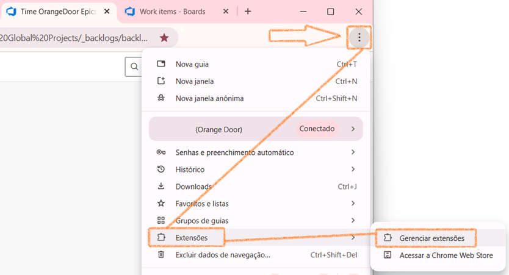
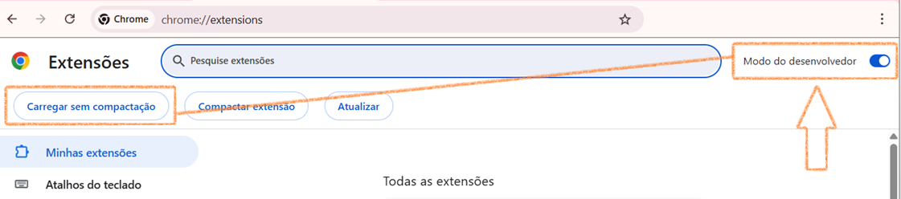
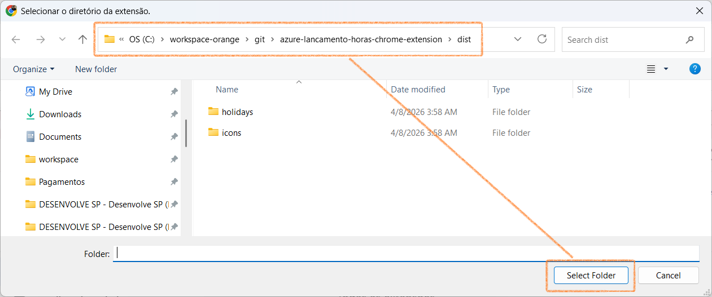
Instalação (modo desenvolvedor)
- Rode o build:
npm install
npm run build
- No Chrome, abra
chrome://extensions
- Ative Developer mode
- Clique em Load unpacked e selecione a pasta
dist/
- Acesse o Azure DevOps (ex.:
https://dev.azure.com/<org>/<project>) e recarregue a página
Funcionalidades
1) Overlay semanal de horas (Weekly Hours)
Cria um botão flutuante 🕒 no canto inferior direito e abre um modal para visualizar/editar horas por período.
- Abrir/fechar: tecla F2 ou clique no botão 🕒
- Recursos:
- Alternância de visualização (semana / mês / intervalo “range”)
- Opções de exibição (ex.: finais de semana, agrupamento por hierarquia, colunas de data)
- Modo edição com salvamento e validações
- Considera feriados nacionais BR (2026–2030) embutidos no build
- Toggles úteis (casos comuns):
- Mostrar LH/Ações: habilite quando precisar identificar “ações”/atalhos de lançamento e conferir rapidamente se você lançou no dia errado (ex.: está lançando hoje as horas de ontem).
- Mostrar fim de semana: habilite quando existirem horas em sábado/domingo e elas não estiverem aparecendo na visualização atual.
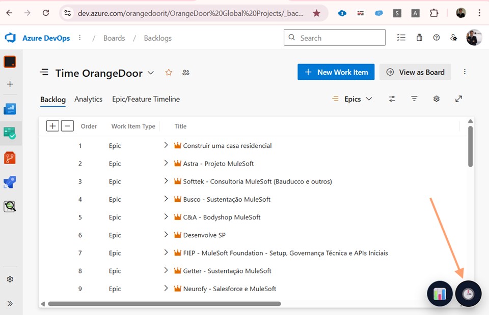
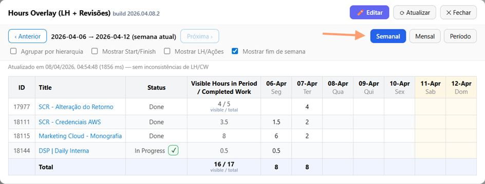
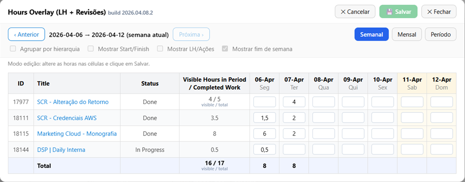
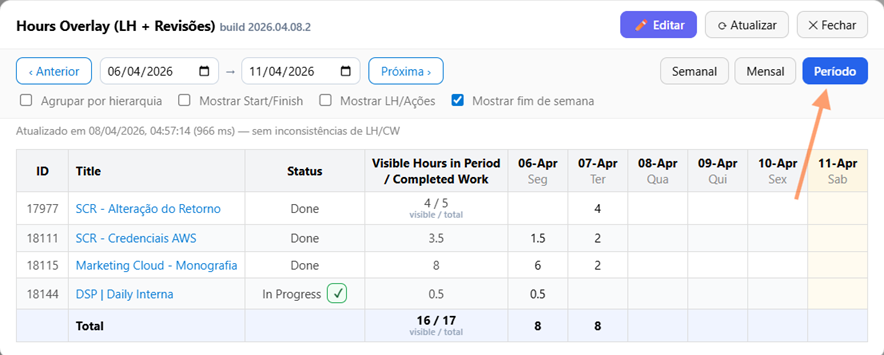
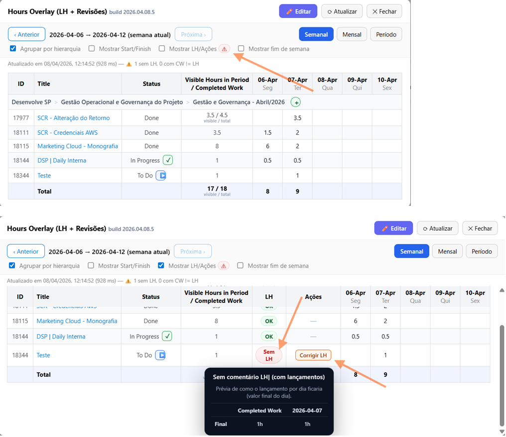
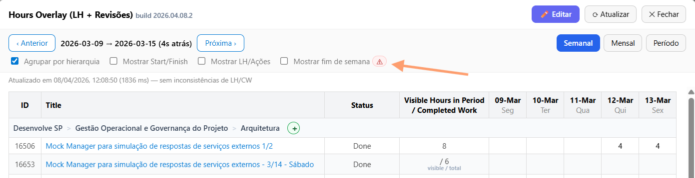
2) Relatório mensal por hierarquia (Monthly Hierarchy)
Cria um botão flutuante 📊 e abre um modal com uma tabela consolidada por hierarquia no mês.
- Abrir/fechar: tecla F3 ou clique no botão 📊
- Recursos:
- Navegação de meses
- Opção de exibir/ocultar finais de semana
- Botão para copiar a imagem da tabela para a área de transferência
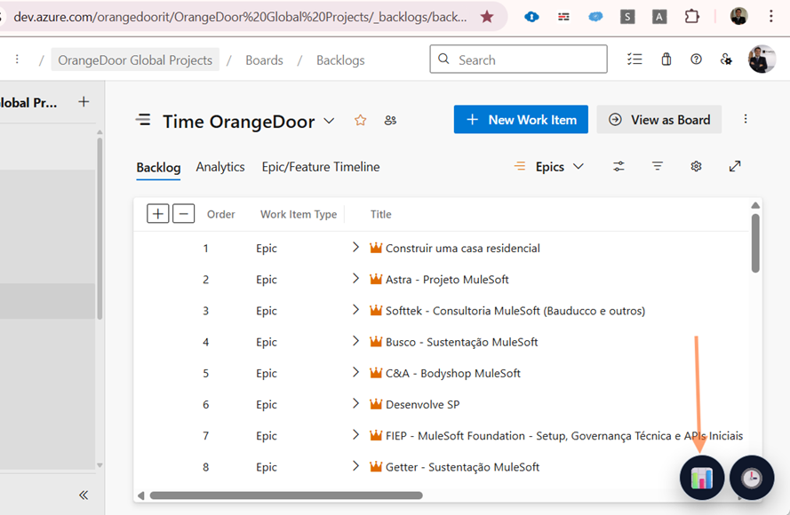
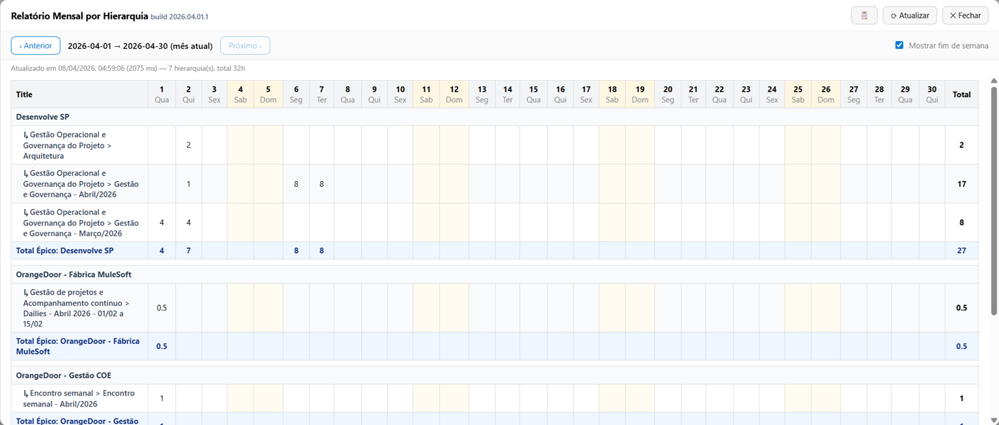
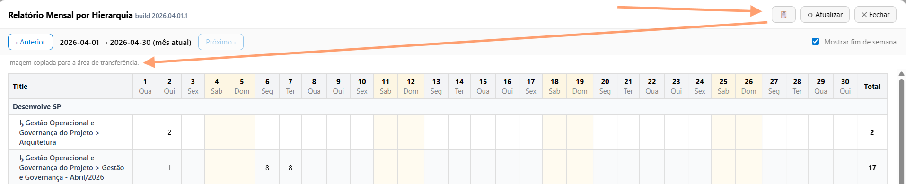
3) Enhancer de criação/edição de task (Create Task Enhancer)
Na tela de criar task (e também em edição de work item), adiciona uma UI inline para agilizar preenchimentos e aplicar ajustes automaticamente após salvar.
- Onde aparece: páginas
_workitems/create/task e _workitems/edit/<id>
- O que faz (alto nível):
- Mantém um estado “desejado” (ex.: State, Priority, datas e horas)
- Captura o “save” (inclusive via Ctrl+S) e aplica pós-save via API do ADO quando necessário
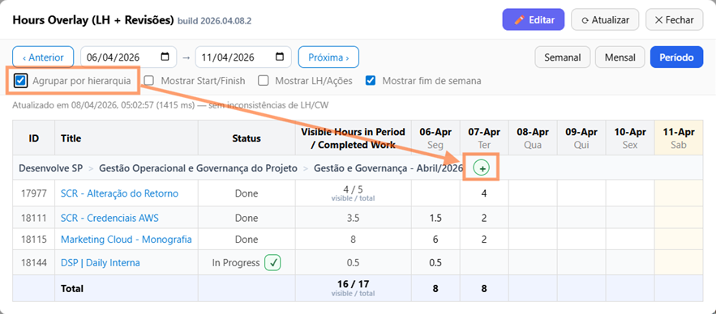
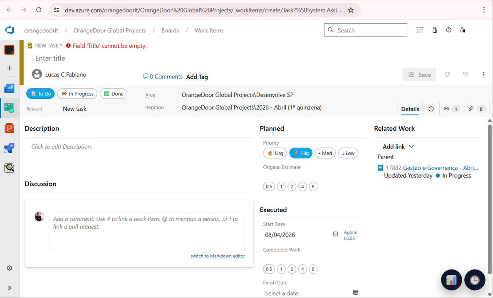
Teclas de atalho
Globais (na página do Azure DevOps)
- F2: abre/fecha o Overlay semanal (🕒)
- F3: abre/fecha o Relatório mensal (📊)
Dentro do modal do Overlay semanal (🕒)
- E: entrar em modo edição (quando não estiver digitando em um campo)
- Ctrl+S / Cmd+S: salvar (apenas em modo edição)
- Esc: cancelar edição (apenas em modo edição)
- ← / →: navegar períodos (quando não estiver em modo edição)
- Enter: aplicar intervalo no modo “range” (nos inputs de início/fim)
Dentro do modal do Relatório mensal (📊)
- ← / →: navegar entre meses (quando o modal estiver aberto)
Dados e permissões
- Permissões:
storage (para persistir preferências/estado)
- Feriados BR:
public/holidays/br-national-2026-2030.json é embutido no bundle durante o build
Desenvolvimento
- Build:
npm run build (gera dist/)
- ZIP para distribuir:
npm run zip (gera dist/chrome-ado-hours-<versao>.zip)
- Watch:
npm run dev (build em modo --watch)
- Typecheck:
npm run typecheck
Troubleshooting
- Não apareceu o botão 🕒/📊:
- Confirme que você está em
dev.azure.com (org/projeto)
- Recarregue a página do ADO (F5)
- Em
chrome://extensions, clique em Reload na extensão
- Confira se você carregou a pasta
dist/ (não public/)
- Ao invés de fazer reload na página, clique no link da página e aperte
Enter